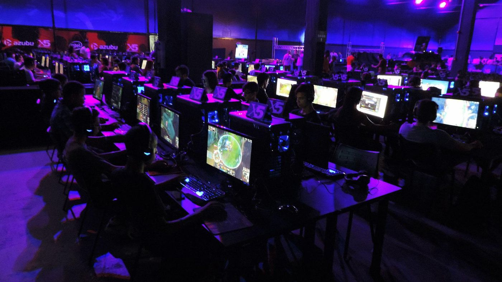
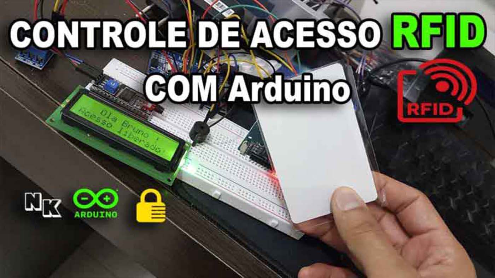
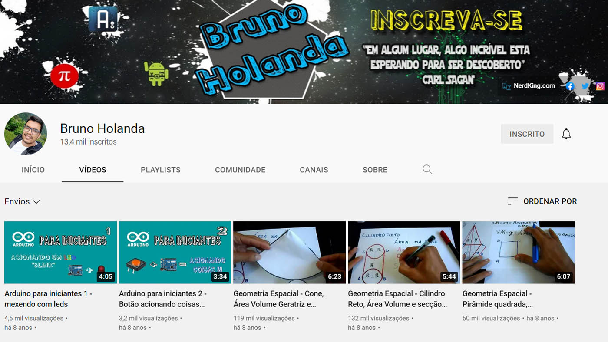
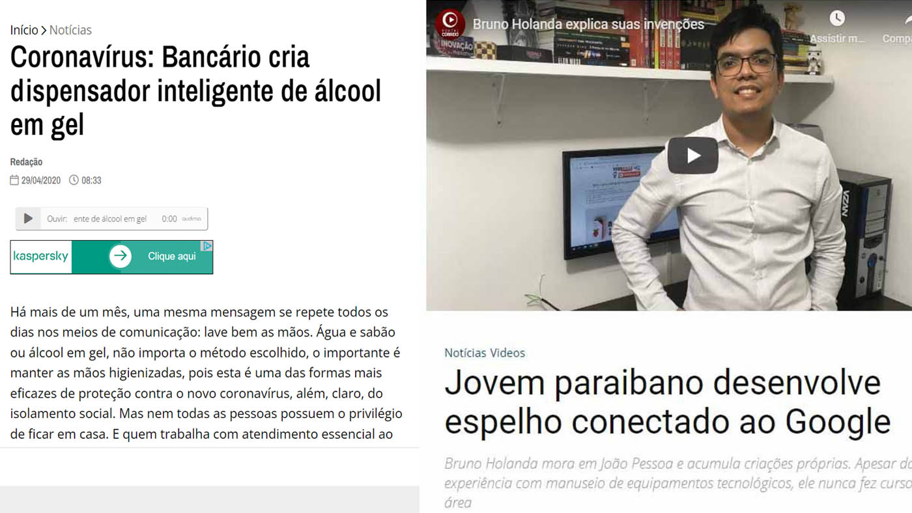

Comecei a trabalhar em uma Lan House quando tinha apenas 12 anos, lá eu passava meu tempo livre, consertava computadores, configurava e reinstalava o sistema, foi nesse período que cresceu uma grande paixão por computadores e comecei a entender o poder que a internet possibilitava.
Algum tempo depois em meados de 2013, comecei a desenvolver projetos pessoais utilizando arduino, uma plaquinha microcontroladora que aceita linguagem C, foi ai que consegui uma boa experiencia com programação e internet das coisas, e abaixo uma previa de um dos projetos que executei com arduino:
E foi então que veio a ideia de criar meu primeiro canal no youtube, onde eu postava minhas gambiarras e ensinava como eu executava meus projetos
O tempo passou e comecei a trabalhar em Banco, isso mesmo, não tinha muito haver com minha paixão mas foi algo que enxerguei como uma oportunidade de melhorar de vida, agarrei essa oportunidade e hoje sou Gerente de Uma unidade de um grande Banco, gerenciando uma equipe com mais de 30 pessoas e trabalhando na melhoria de processos diários, embora seja uma área distante da programação, consegui vasta experiencia com gestão de equipes e sempre sugerindo e aplicando melhorias nos processos diários, otimizando o tempo.
Em paralelo a meu trabalho em Banco sempre estive presente na internet e entregando projetos de graça no youtube e no blog Nerd King, alguns desses projetos até foram matérias em jornais locais
Com a pandemia do Covid-19 percebi que o mundo teve uma aceleração de mudanças principalmente no tocante ao desenvolvimento e aplicação de tecnologias nos mais variados postos de trabalho
Foi então que planejei uma mudança de rota na minha vida e comecei uma nova graduação para profissionalizar minha paixão por tecnologia e migrar minha área de atuação no mercado. E então no inicio de 2022 comecei a Estudar "Analise e desenvolvimento de sistemas", dai então venho numa jornada incessante de aprender mais e não me limitar à Universidade convencional, estou realizando varias formações na Alura, uma plataforma de cursos incrível que está me ajudando nesse processo de aprendizado
Atualmente estou aberto a trabalhos "Front-End" de meio período em regime Home Office e garanto a credibilidade de um profissional serio e que vai fazer o melhor para o seu projeto ou empresa.